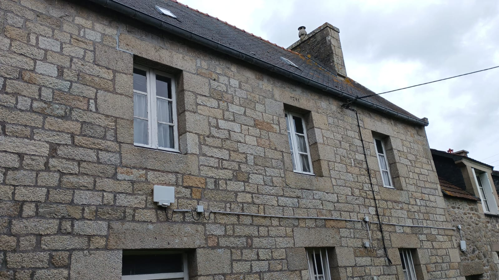
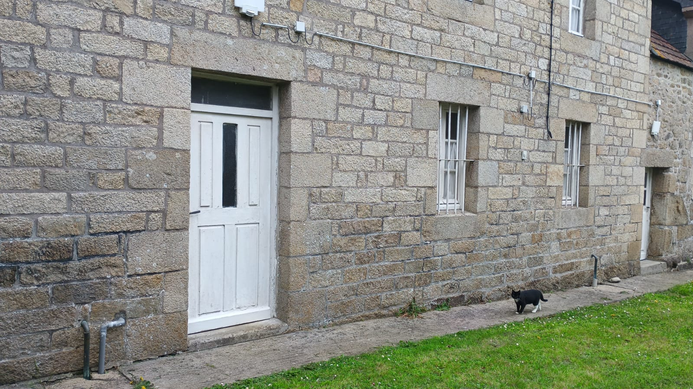
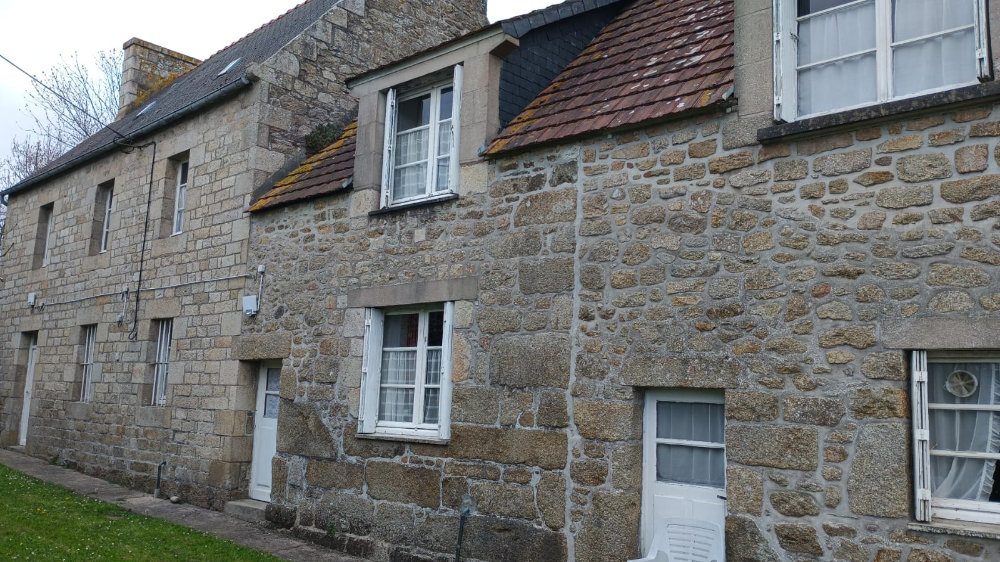
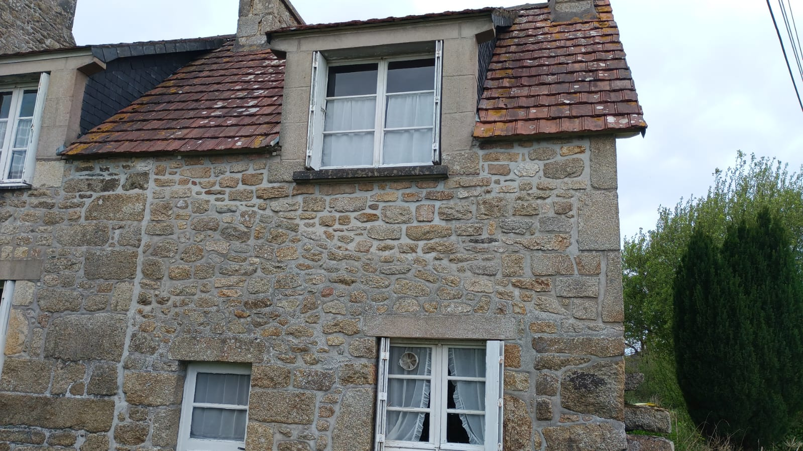
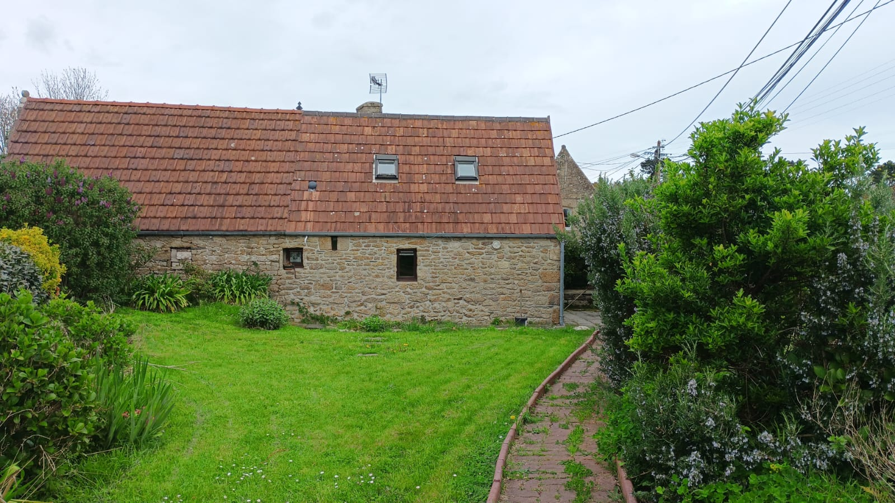
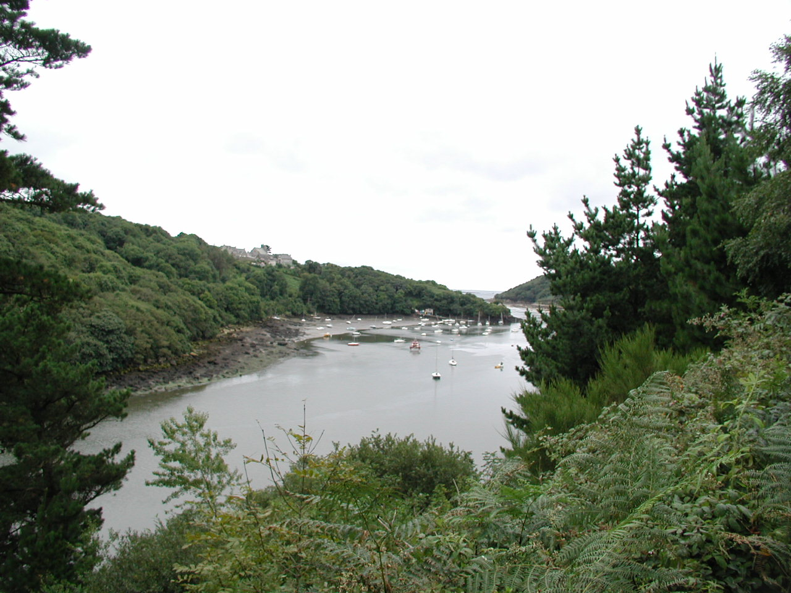

Maisons de Kervider
Dans une longère à deux kilomètres de la plage de Beg Léguer et à 500 m du port du BEG HENT..
Vous pourrez profiter pleinement du calme de la campagne tout en restant proche des commerces et de la ville.
Possibilité de transport en commun pour la plage les commerces et la gare. Ligne B.
Pour voir plus de photos sur chaque maison, cliquez sur les images correspondantes.

Appartement du HAUT de la maison principale

Appartement du BAS de la maison principale

Maison du MILIEU

Premiére Maison

Maison independante avec petit jardin

Environnement
Verdure, silence et nature préservée.